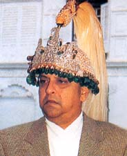

Gyanendra Bir Bikram Shah Dev
Biography:
Gyanendra Bir Bikram Shah Dev was born on 7 July, 1947 in Narayanhiti Royal Palace, Nepal.
He was the son of Mahendra Bir Bikram Shah Dev and Indra Rajya Lakshmi Devi.
He was the twelveth King of Kingdom of Nepal. For the first time he became the King from
7 November, 1950 to 7 January 1951 when all the royal family went into exile in India.
Similarly, when Royal massacared occured then again he became the King from 4 June, 2001 to 28 May, 2008 for the second time.
He was the last King of Shah Dynasty after the monarchy was abolished in Nepal.